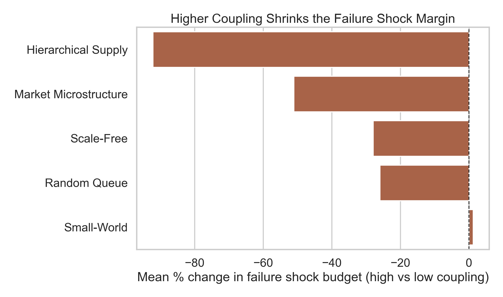
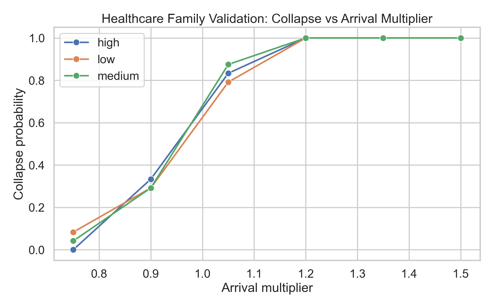
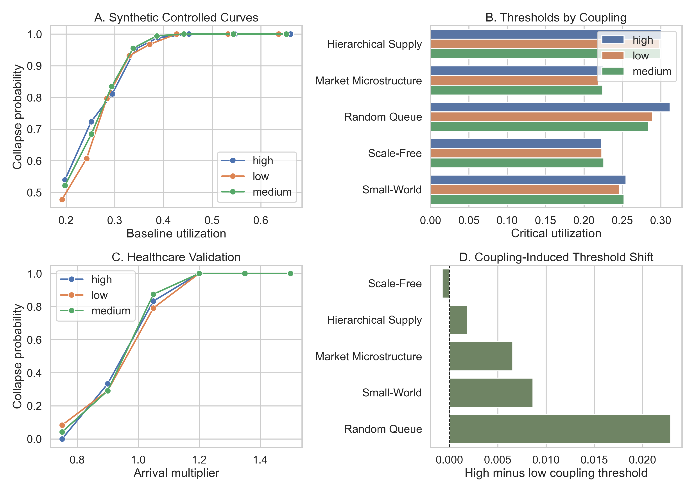

In the controlled follow-up sweep over 2,700 fixed-size synthetic systems plus 144 healthcare variants, StressLab found that the collapse threshold stays primarily utilization-led, while higher coupling shifts it only modestly on average (0.008 utilization points) but reduces the shock margin to failure by about 39.2%.
Synthetic controlled systems: 2,700
Healthcare variants: 144
| topology_type | topology_label | low_threshold | medium_threshold | high_threshold | threshold_shift |
|---|---|---|---|---|---|
| scale_free | Scale-Free | 0.223129 | 0.225859 | 0.222352 | -0.000778 |
| hierarchical_supply | Hierarchical Supply | 0.298518 | 0.299785 | 0.300335 | 0.001816 |
| market_microstructure | Market Microstructure | 0.218241 | 0.224300 | 0.224785 | 0.006544 |
| small_world | Small-World | 0.245826 | 0.251937 | 0.254477 | 0.008650 |
| random_queue | Random Queue | 0.289177 | 0.283908 | 0.312077 | 0.022900 |
| topology_type | topology_label | mean_pct_change_high_vs_low | median_low_budget | median_high_budget |
|---|---|---|---|---|
| hierarchical_supply | Hierarchical Supply | -0.921638 | 0.000000 | 0.000000 |
| market_microstructure | Market Microstructure | -0.510785 | 0.000000 | 0.000000 |
| scale_free | Scale-Free | -0.279359 | 0.055910 | 0.040342 |
| random_queue | Random Queue | -0.260210 | 0.636697 | 0.445645 |
| small_world | Small-World | 0.011982 | 0.237774 | 0.212637 |
| topology_type | topology_label | coupling_regime | critical_utilization | peak_slope | mean_collapse_probability | feature |
|---|---|---|---|---|---|---|
| healthcare_referral | Healthcare ED Family | high | 0.975 | 3.333333 | 0.694444 | util_target |
| healthcare_referral | Healthcare ED Family | low | 0.975 | 3.333333 | 0.694444 | util_target |
| healthcare_referral | Healthcare ED Family | medium | 0.975 | 3.888889 | 0.701389 | util_target |



